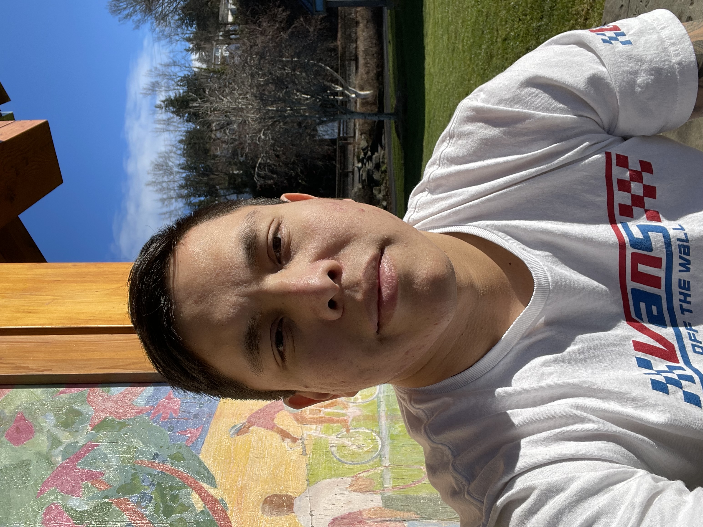

About
This page is about myself. This is what I enjoy doing.
- Front-end Development
- Back-end Development
- Learning Code Languages
- Watching Sports
| Skills | Years of Experience | Level of Expertise |
| HTML | 1 | Beginner |
| CSS | 1 | Beginner |
| JaveScript | 1 | Beginner |
Who Am I?
My name is Bryan but you can call me Tyler. I was born in Guatemala City, Guatemala. I was adopted and moved to Kentucky at the age of three. I was raised in the small town of Danville Kentucky, Go Admirals! I come from a very large family. There are 11 of us total, me being the 10th. During my free time, I enjoy hanging out with friends and going hiking. I've hiked mountains in Kentucky, Colorado, Tennessee, and Washington. Oh, did I mention that I am a Web Developer? I spend most of my time studying code. I challenge myself everyday to become better. I will always look at a website and ask myself, "How can I improve this?" Know that you have gotten to know me a little better, how about introducing yourself? Check out the Contact-Page of this website to connect with me. I look forward to hearing from you and your team!